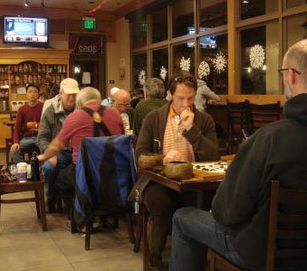

| Santa Barbara Go Club | ||
|
The Santa Barbara Go Club meets every Saturday at Dean's Coffee Shop (6100 Hollister Ave, Goleta, CA) noon to 4 pm
We also play online Wednesday nights in the Santa Barbara Go Club room on the KGS go server.
For any further information, contact Lorin at lorinlevin@yahoo.com  |

|
|